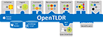

OpenTLDR
1.0.0
A Research Framework for Generating a Tailored Daily Report
Loading...
Searching...
No Matches
Here is a list of all functions with links to the classes they belong to:
- g -
get_all_content() :
opentldr.KnowledgeGraph.KnowledgeGraph
get_all_entities() :
opentldr.KnowledgeGraph.KnowledgeGraph
get_all_evalkeys() :
opentldr.KnowledgeGraph.KnowledgeGraph
get_all_node_uids_by_tag() :
opentldr.KnowledgeGraph.KnowledgeGraph
get_all_nodes_by_tag() :
opentldr.KnowledgeGraph.KnowledgeGraph
get_all_recommendations() :
opentldr.KnowledgeGraph.KnowledgeGraph
get_all_reference_edges() :
opentldr.KnowledgeGraph.KnowledgeGraph
get_all_reference_nodes() :
opentldr.KnowledgeGraph.KnowledgeGraph
get_all_requests() :
opentldr.KnowledgeGraph.KnowledgeGraph
get_all_sources() :
opentldr.KnowledgeGraph.KnowledgeGraph
get_all_summary() :
opentldr.KnowledgeGraph.KnowledgeGraph
get_all_tldrs() :
opentldr.KnowledgeGraph.KnowledgeGraph
get_all_users() :
opentldr.KnowledgeGraph.KnowledgeGraph
get_based_on() :
opentldr.Domain.TldrEntry
get_by_uid() :
opentldr.KnowledgeGraph.KnowledgeGraph
get_connection_json() :
opentldr.Domain.OpenTldrEdge
,
opentldr.Domain.ReferenceEdge
get_contains() :
opentldr.Domain.Tldr
get_content_by_date() :
opentldr.KnowledgeGraph.KnowledgeGraph
get_content_by_recommendation() :
opentldr.KnowledgeGraph.KnowledgeGraph
get_content_by_source() :
opentldr.KnowledgeGraph.KnowledgeGraph
get_content_by_source_uid() :
opentldr.KnowledgeGraph.KnowledgeGraph
get_content_by_title() :
opentldr.KnowledgeGraph.KnowledgeGraph
get_content_by_uid() :
opentldr.KnowledgeGraph.KnowledgeGraph
get_content_by_url() :
opentldr.KnowledgeGraph.KnowledgeGraph
get_entities_by_content() :
opentldr.KnowledgeGraph.KnowledgeGraph
get_entities_by_content_uid() :
opentldr.KnowledgeGraph.KnowledgeGraph
get_entities_by_request() :
opentldr.KnowledgeGraph.KnowledgeGraph
get_entity_by_uid() :
opentldr.KnowledgeGraph.KnowledgeGraph
get_entity_by_url() :
opentldr.KnowledgeGraph.KnowledgeGraph
get_entries_by_tldr() :
opentldr.KnowledgeGraph.KnowledgeGraph
get_evalkey_by_content_and_request() :
opentldr.KnowledgeGraph.KnowledgeGraph
get_evalkey_by_uid() :
opentldr.KnowledgeGraph.KnowledgeGraph
get_evalkeys_by_content() :
opentldr.KnowledgeGraph.KnowledgeGraph
get_evalkeys_by_request() :
opentldr.KnowledgeGraph.KnowledgeGraph
get_feedback_by_request() :
opentldr.KnowledgeGraph.KnowledgeGraph
get_feedback_by_tldr_entry() :
opentldr.KnowledgeGraph.KnowledgeGraph
get_focus_on() :
opentldr.Domain.Summary
get_includes() :
opentldr.Domain.TldrEntry
get_is_from() :
opentldr.Domain.Content
get_mentioned_in() :
opentldr.Domain.Entity
get_recommendation() :
opentldr.KnowledgeGraph.KnowledgeGraph
get_recommendation_by_id() :
opentldr.KnowledgeGraph.KnowledgeGraph
get_recommendations_by_request() :
opentldr.KnowledgeGraph.KnowledgeGraph
get_recommends() :
opentldr.Domain.Recommendation
get_reference_edge_by_uid() :
opentldr.KnowledgeGraph.KnowledgeGraph
get_reference_node_by_uid() :
opentldr.KnowledgeGraph.KnowledgeGraph
get_refers_to() :
opentldr.Domain.Entity
get_relates_to() :
opentldr.Domain.Recommendation
get_request_by_title() :
opentldr.KnowledgeGraph.KnowledgeGraph
get_request_by_uid() :
opentldr.KnowledgeGraph.KnowledgeGraph
get_requested_by() :
opentldr.Domain.Request
get_requests_by_tldr_entry() :
opentldr.KnowledgeGraph.KnowledgeGraph
get_requests_by_user() :
opentldr.KnowledgeGraph.KnowledgeGraph
get_requests_by_user_uid() :
opentldr.KnowledgeGraph.KnowledgeGraph
get_response_to() :
opentldr.Domain.Tldr
get_source_by_name() :
opentldr.KnowledgeGraph.KnowledgeGraph
get_source_by_uid() :
opentldr.KnowledgeGraph.KnowledgeGraph
get_summaries_by_content() :
opentldr.KnowledgeGraph.KnowledgeGraph
get_summaries_by_recommendation() :
opentldr.KnowledgeGraph.KnowledgeGraph
get_summarizes() :
opentldr.Domain.Summary
get_summary() :
opentldr.KnowledgeGraph.KnowledgeGraph
get_summary_by_id() :
opentldr.KnowledgeGraph.KnowledgeGraph
get_tldr() :
opentldr.KnowledgeGraph.KnowledgeGraph
get_tldr_by_request() :
opentldr.KnowledgeGraph.KnowledgeGraph
get_tldr_by_request_uid() :
opentldr.KnowledgeGraph.KnowledgeGraph
get_tldr_by_uid() :
opentldr.KnowledgeGraph.KnowledgeGraph
get_tldr_by_uid_and_date() :
opentldr.KnowledgeGraph.KnowledgeGraph
get_tldr_entry_by_uid() :
opentldr.KnowledgeGraph.KnowledgeGraph
get_tldrs_before_date() :
opentldr.KnowledgeGraph.KnowledgeGraph
get_tldrs_by_date() :
opentldr.KnowledgeGraph.KnowledgeGraph
get_user_by_name() :
opentldr.KnowledgeGraph.KnowledgeGraph
get_user_by_uid() :
opentldr.KnowledgeGraph.KnowledgeGraph
getAllFiles() :
opentldr.FileSystemDataRepo.FileSystemDataRepo
getNeo4jDriver() :
opentldr.KnowledgeGraph.KnowledgeGraph
Generated by
1.13.2